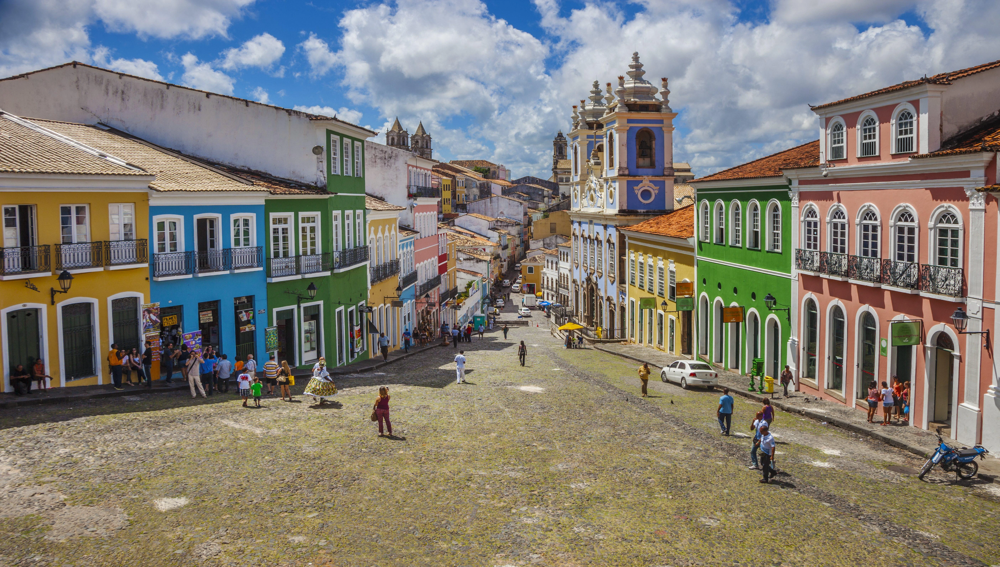
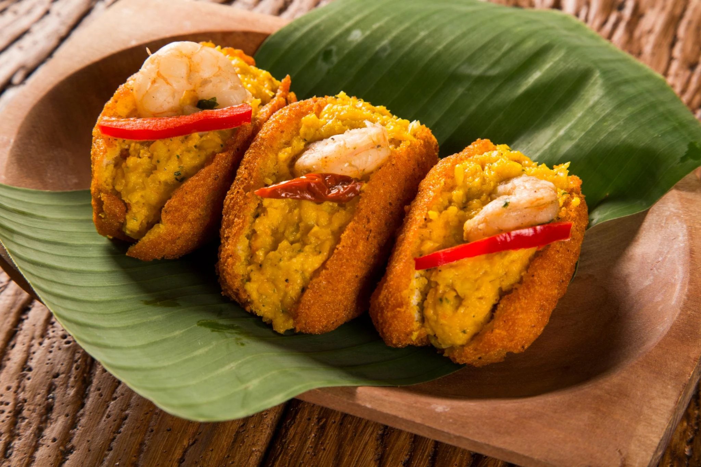
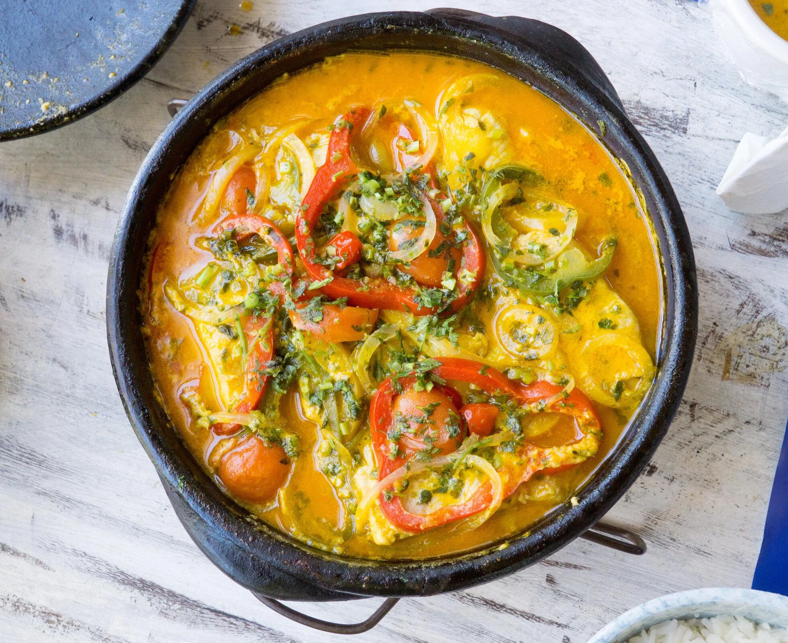

Capital
Salvador
Conheça destinos, culturas, sabores e paisagens de todas as regiões
brasileiras.
Destinos, culturas e paisagens
incríveis te esperam.
A Bahia é o maior estado da Região Nordeste e um dos mais importantes para a história e a cultura do Brasil. Foi nesse território que os portugueses chegaram em 1500, tornando a região um dos principais centros da colonização brasileira. O estado é conhecido por suas belas praias, cidades históricas, rica herança afro-brasileira, festas populares e culinária marcante. Com paisagens que vão do litoral ao sertão, a Bahia oferece uma grande diversidade de atrações turísticas.

Salvador
Aproximadamente 564.733 km²
Cerca de 14 milhões de habitantes
Nordeste

O Pelourinho é o centro histórico de Salvador e um dos patrimônios culturais mais importantes do Brasil. Suas ruas de pedra, casarões coloridos e igrejas históricas preservam parte significativa da história colonial brasileira.
.webp)
O Parque Nacional da Chapada Diamantina é um dos principais destinos de ecoturismo do país. A região possui cachoeiras, grutas, montanhas e trilhas que atraem visitantes em busca de aventura e contato com a natureza.

Localizado na Ilha de Tinharé, o Morro de São Paulo é um dos destinos mais visitados da Bahia. O local encanta turistas com praias paradisíacas, águas transparentes e uma animada vida noturna.

O Acarajé é um dos pratos mais famosos da Bahia. Feito com massa de feijão-fradinho frita no azeite de dendê, é geralmente recheado com vatapá, camarão e salada.

A Moqueca Baiana é preparada com peixe ou frutos do mar, leite de coco, azeite de dendê e temperos típicos. É considerada um dos símbolos da gastronomia do estado.

O Vatapá é um creme feito com pão, camarão, leite de coco, amendoim, castanha e azeite de dendê. Costuma acompanhar diversos pratos da culinária baiana.
A Bahia possui clima predominantemente tropical, com temperaturas elevadas durante a maior parte do ano. O litoral apresenta clima quente e úmido, ideal para atividades ao ar livre.
A Bahia possui clima predominantemente tropical, com temperaturas elevadas durante a maior parte do ano. O litoral apresenta clima quente e úmido, ideal para atividades ao ar livre.
Salvador é indispensável para quem deseja conhecer a história e a cultura baiana. Para praias, destaque para o Litoral Norte e Morro de São Paulo. Já a Chapada Diamantina é ideal para ecoturismo e aventura.
Salvador é indispensável para quem deseja conhecer a história e a cultura baiana. Para praias, destaque para o Litoral Norte e Morro de São Paulo. Já a Chapada Diamantina é ideal para ecoturismo e aventura.
A culinária baiana é uma das mais famosas do Brasil. Os pratos preparados com azeite de dendê, leite de coco e frutos do mar proporcionam uma experiência gastronômica única e fortemente ligada à cultura afro-brasileira.
A culinária baiana é uma das mais famosas do Brasil. Os pratos preparados com azeite de dendê, leite de coco e frutos do mar proporcionam uma experiência gastronômica única e fortemente ligada à cultura afro-brasileira.